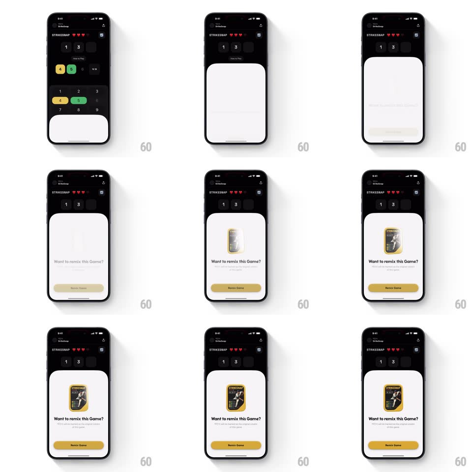

Media
Frame-by-frame

Rebuild this animation 1:1: Spielwerk's remix sheet - a white bottom sheet slides up over the game carrying a 3D game card that tilts back and forth with a glossy shimmer sweeping its face, over "Want to remix this Game?" and a Remix pill.

Rebuild this animation 1:1: Spielwerk's remix sheet - a white bottom sheet slides up over the game carrying a 3D game card that tilts back and forth with a glossy shimmer sweeping its face, over "Want to remix this Game?" and a Remix pill. ## Integration Integration: stack-agnostic spec - springs given as stiffness/damping, timed motions as duration + curve; map every value to your framework and animation library of choice. ## Scene The STRIKESNAP game screen (dark, keypad, hearts) behind a rising white sheet: a gold game-cover card centered, "Want to remix this Game?" copy with subline, and a gold "Remix Game" pill. ## Motion spec Pattern: sheet entrance with tilting shimmer card, ~600ms in. - Sheet: slides up to two-thirds height (spring ~300/26, 450ms); the game behind dims (black to 40%, 250ms). - Card: scales in (0.8 -> 1, spring ~380/20, 350ms) then idles with a slow 3D sway (rotateY +-12deg and rotateX +-6deg, 4s, ease-in-out, perspective 900px). - Shimmer: a glossy highlight band sweeps across the card face (left to right, 1.2s, repeating every 3s) with its angle locked to the card's tilt so it reads as a real reflection. - Copy and pill fade up (250ms each, +80ms apart) after the sheet settles. ## Calibration - The shimmer moves in screen space while the card tilts in 3D - keep the highlight coherent with the light source. - The sheet is non-modal height: the game's top edge stays visible above it. ## Reduced motion Card static; no shimmer sweep. ## Don't miss - The card's sway is two-axis, not a flat rock. - The shimmer repeats on a fixed cadence - it is an idle effect, not a one-shot.